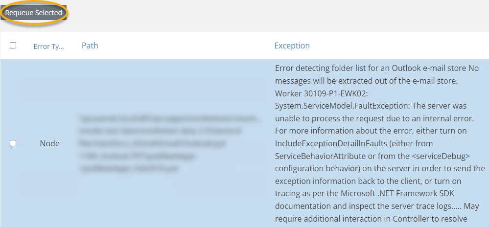

If a Media Manager job encounters node errors, an Error link appears to the left of the data path as shown in the following figure.
If you see an error link, take the following steps:
Click the Error link on the left side of the data path in the Media Manager Data Locations list.
Select the job or jobs you would like to requeue.
Click the Requeue button to restart the job.

For more detailed error resolution you also have the option to Retry All Failed Tasks in the Job Manager, see
Related Topics